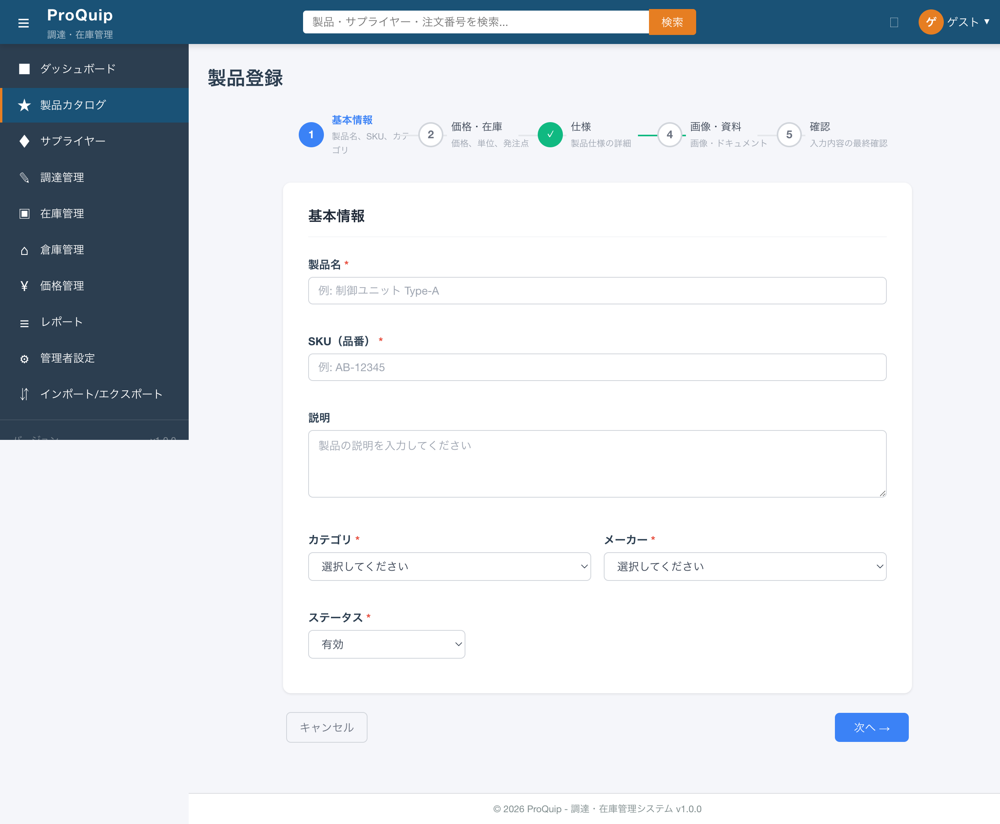
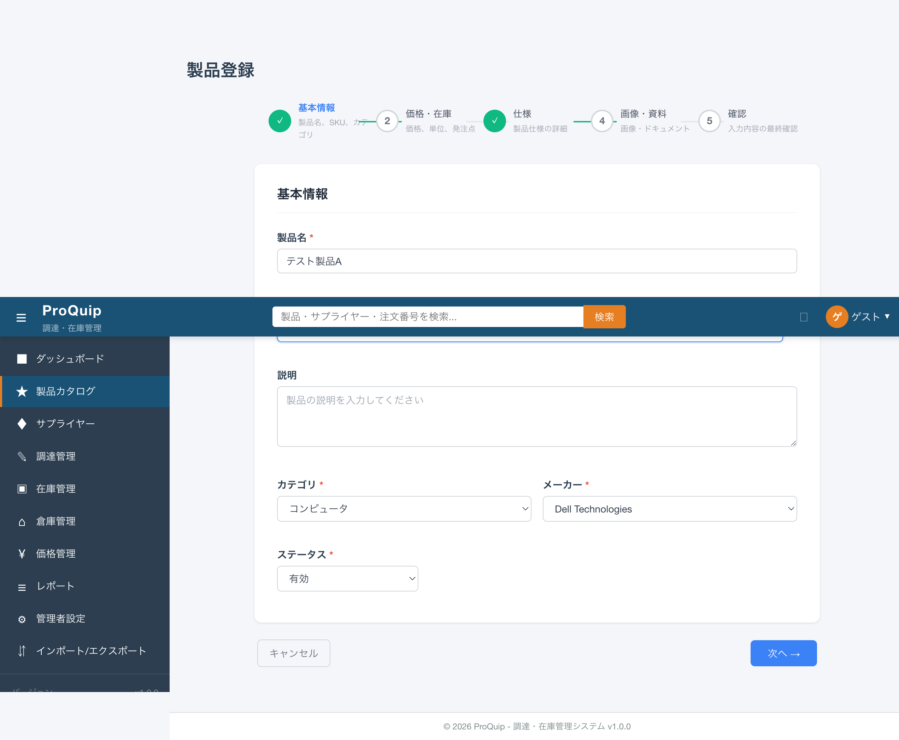
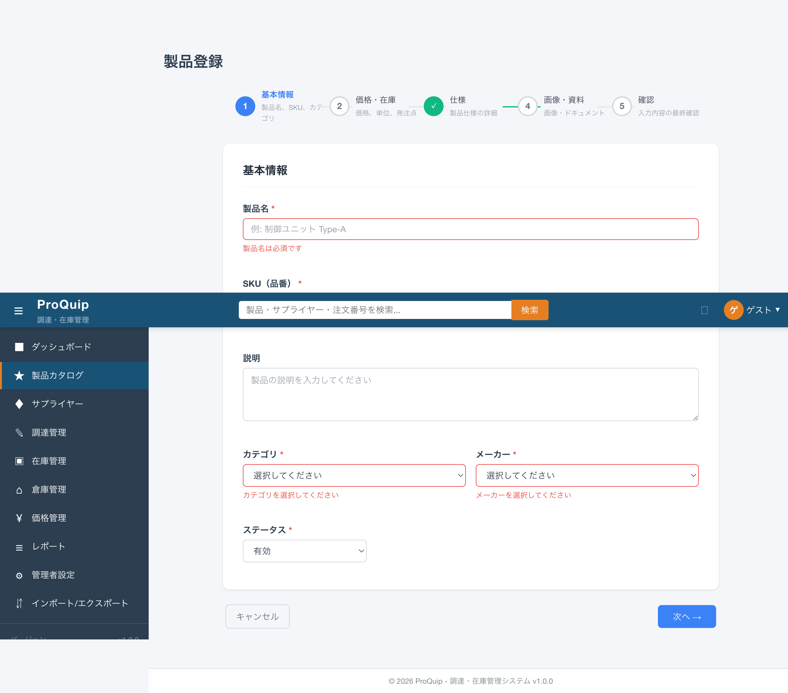
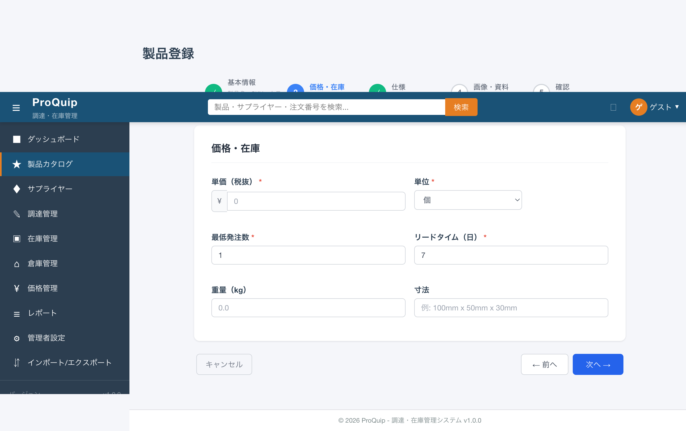
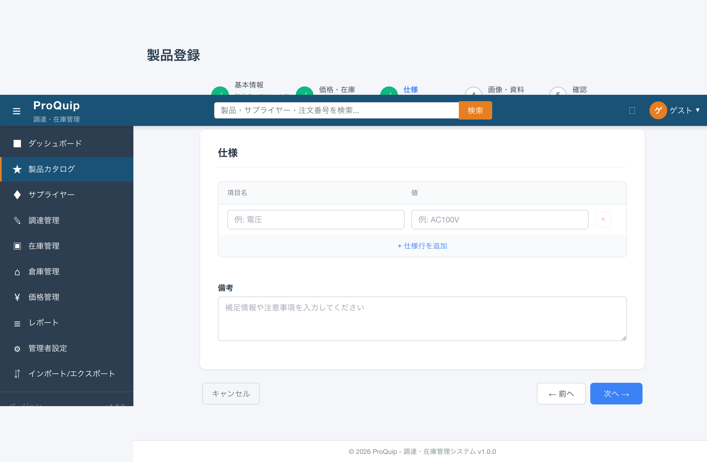
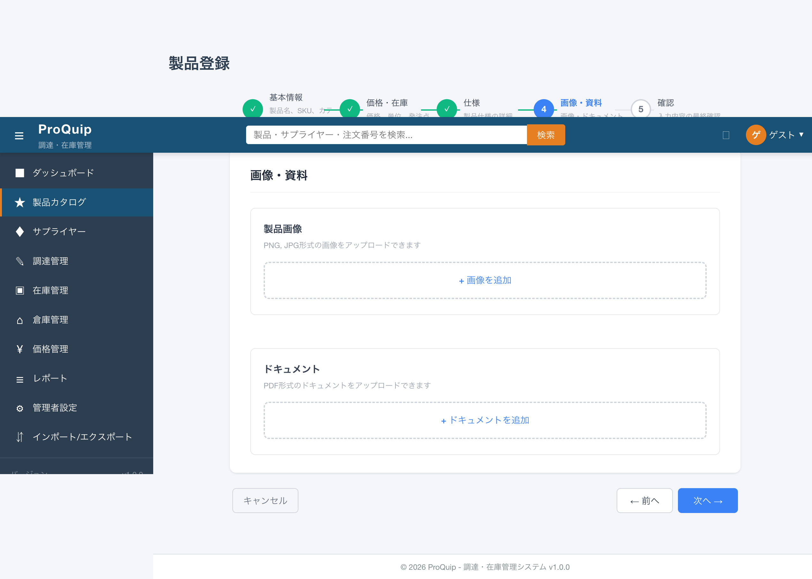
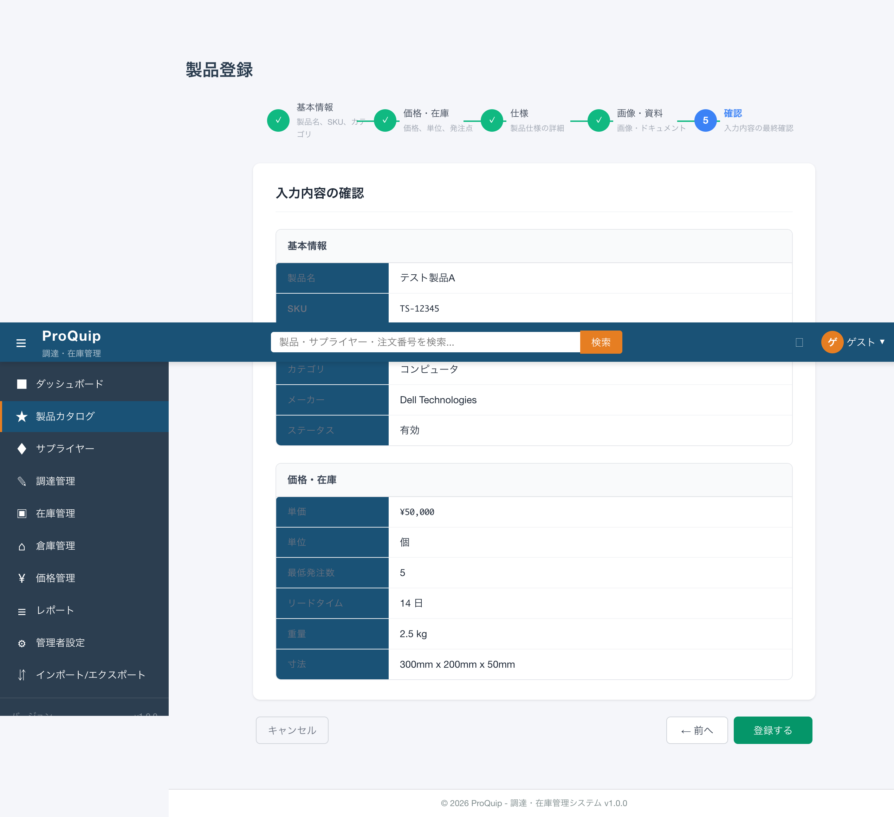
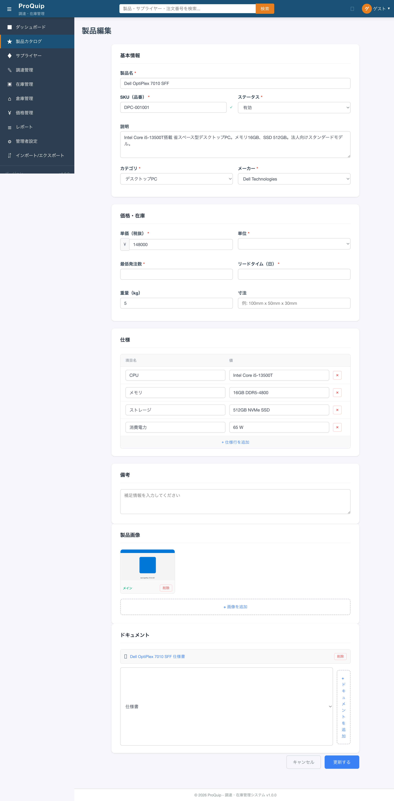

最終更新: 2026-05-26
5ステップウィザードの初期表示。ステップ1がアクティブ状態。
screenshots/F-03/F-03-05_product-create_initial.png

製品登録画面を5ステップのウィザード形式で構成し、ステップインジケーター（番号付き丸アイコン）と「前へ」「次へ」「キャンセル」ボタンでナビゲーションする。完了済みステップにはチェックマーク（✓）が表示される。
製品登録に必要な多数の入力項目をステップごとに分割し、入力の負荷を軽減してユーザーを順序立てて案内するため。
| 項目名 | 表示条件 | 値の取得元 | 備考 |
|---|---|---|---|
| ページタイトル「製品登録」 | 常時 | 固定文字列 | h1要素 |
| ステップインジケーター | 常時 | steps配列 | 5つの番号付き丸アイコン（1-5）を横並び表示 |
| ステップ1ラベル: 基本情報 | 常時 | 固定文字列 | サブラベル「製品名、SKU、カテゴリ」 |
| ステップ2ラベル: 価格・在庫 | 常時 | 固定文字列 | サブラベル「価格、単位、発注点」 |
| ステップ3ラベル: 仕様 | 常時 | 固定文字列 | サブラベル「製品仕様の詳細」 |
| ステップ4ラベル: 画像・資料 | 常時 | 固定文字列 | サブラベル「画像・ドキュメント」 |
| ステップ5ラベル: 確認 | 常時 | 固定文字列 | サブラベル「入力内容の最終確認」 |
| 完了マーク（✓） | ステップが完了済み | currentStep比較 | 番号の代わりにチェックマークを表示 |
| 「キャンセル」ボタン | 常時（全ステップ） | 固定文字列 | 製品一覧へ戻る |
| 「← 前へ」ボタン | currentStep >= 2 | 固定文字列 | ステップ1では非表示 |
| 「次へ →」ボタン | currentStep <= 4 | 固定文字列 | ステップ5では非表示 |
| 「登録する」ボタン | currentStep === 5 | 固定文字列 | ステップ5のみ表示 |
本機能固有の入力項目なし（ナビゲーション制御のみ）。
| 操作名 | トリガー | 実行内容 | 正常時の結果 | 異常時の結果 | 状態変化 |
|---|---|---|---|---|---|
| 次のステップへ | 「次へ →」ボタンクリック | 現在のステップのバリデーション実行、合格時にcurrentStep+1 | 次のステップが表示される | バリデーションエラー表示（F-03-05-002参照） | currentStep: N→N+1 |
| 前のステップへ | 「← 前へ」ボタンクリック | currentStep-1（バリデーションなし） | 前のステップが表示される | - | currentStep: N→N-1 |
| キャンセル | 「キャンセル」ボタンクリック | router.navigate(['/products']) | 製品一覧画面へ遷移 | - | 画面遷移 |
ステップ1から順に入力し、「次へ →」で進む。完了済みステップにはチェックマーク（✓）が表示される。「← 前へ」で戻ることも可能（バリデーションなし、入力値は保持）。ステップ5で「登録する」をクリックして登録を完了する。
ステップ1で必須項目未入力の状態で「次へ →」をクリックすると、バリデーションエラーメッセージが表示されステップ遷移しない。ステップ2以降のバリデーションも同様。
AuthGuardのみ。BE側ProductResourceに@RolesAllowed未設定（技術的負債：全認証済みユーザーがアクセス可能）。FEルートにRoleGuardなし。
| 状態 | 条件 | 表示 |
|---|---|---|
| currentStep=1 | 初期表示 | 基本情報フォーム表示、「← 前へ」非表示 |
| currentStep=2-4 | 「次へ →」遷移後 | 該当ステップフォーム表示、「← 前へ」「次へ →」両方表示 |
| currentStep=5 | ステップ4から遷移 | 確認画面表示、「次へ →」非表示、「登録する」表示 |
ナビゲーション自体にAPI呼び出しなし。
| ファイルパス | 関数/クラス/メソッド名 | 確認内容 |
|---|---|---|
| proquip-frontend/src/app/features/products/product-create/product-create.component.ts | currentStep, nextStep(), prevStep() | ステップ遷移ロジック |
| proquip-frontend/src/app/features/products/product-create/product-create.component.html | step-indicator セクション | ステップインジケーターのテンプレート |
撮影条件: 製品登録画面の初期表示（ステップ1アクティブ） ／ 備考: ステップインジケーターの番号丸アイコンとラベルが確認できる
screenshots/F-03/F-03-05_product-create_initial.png
High
ステップ1（基本情報）の入力フォーム。値を入力した状態。
screenshots/F-03/F-03-05_product-create_step1-filled.png

ウィザードのステップ1で製品の基本情報（製品名・SKU・説明・カテゴリ・メーカー・ステータス）を入力するフォーム。カテゴリとメーカーはAPIから取得した選択肢をドロップダウンで表示する。
製品を一意に識別・分類するための基本属性を入力するため。
| 項目名 | 表示条件 | 値の取得元 | 備考 |
|---|---|---|---|
| ステップタイトル「基本情報」 | currentStep === 1 | 固定文字列 | h2要素 |
| バリデーションエラーメッセージ | フォーム送信試行時に各項目invalid | バリデーション結果 | 赤文字で各項目下に表示 |
| 項目名 | 型 | 必須/任意 | 入力制約 | 初期値 | バリデーション | 備考 |
|---|---|---|---|---|---|---|
| 製品名 | text | 必須 | 最大300文字（DB: VARCHAR(300)） | 空文字 | Validators.required | placeholder: 「例: 制御ユニット Type-A」 |
| SKU（品番） | text | 必須 | パターン制約あり（F-03-05-003参照） | 空文字 | Validators.required | placeholder: 「例: AB-12345」。入力時にSKU重複チェック実行 |
| 説明 | textarea | 任意 | DB: TEXT（制限なし） | 空文字 | なし | placeholder: 「製品の説明を入力してください」 |
| カテゴリ | select | 必須 | APIから取得した選択肢（20件） | 「選択してください」（未選択） | Validators.required | GET /api/products/categories で取得。HDD, OS, SSD, アクセスポイント, オフィスソフト, キーボード, コンピュータ, サプライ品, スイッチ, ストレージ, ソフトウェア, デスクトップPC, ネットワーク, ノートPC, プリンター, マウス, モニター, ルーター, ワークステーション, 周辺機器 |
| メーカー | select | 必須 | APIから取得した選択肢（15件） | 「選択してください」（未選択） | Validators.required | GET /api/products/manufacturers で取得。ASUS, Apple, Cisco Systems, Dell Technologies, EIZO, HP Inc., Lenovo, Microsoft, NEC, エプソン, エレコム, キヤノン, バッファロー, ブラザー工業, 富士通 |
| ステータス | select | 必須 | 有効/無効/保留の3択 | 有効 | Validators.required | 新規登録では3択（編集画面では「廃番」を加えた4択） |
| 操作名 | トリガー | 実行内容 | 正常時の結果 | 異常時の結果 | 状態変化 |
|---|---|---|---|---|---|
| カテゴリ一覧取得 | 画面初期表示（ngOnInit） | GET /api/products/categories | カテゴリドロップダウンに選択肢をセット | コンソールエラー | categories配列更新 |
| メーカー一覧取得 | 画面初期表示（ngOnInit） | GET /api/products/manufacturers | メーカードロップダウンに選択肢をセット | コンソールエラー | manufacturers配列更新 |
| 次へバリデーション | 「次へ →」クリック（ステップ1） | 基本情報フォームのバリデーション実行 | ステップ2へ遷移 | エラーメッセージ表示 | markAllAsTouched実行 |
製品名・SKU・カテゴリ・メーカーの必須項目を入力し、「次へ →」をクリックするとステップ2に遷移する。カテゴリとメーカーは画面初期表示時にAPIから取得してドロップダウンにセットされる。ステータスのデフォルト値は「有効」。
AuthGuardのみ。BE側ProductResourceに@RolesAllowed未設定（技術的負債）。
フォーム入力値はcurrentStep遷移時も保持される。「← 前へ」で戻った場合も入力値はそのまま。
| API ID | method | path | request | response | error response | 根拠 |
|---|---|---|---|---|---|---|
| - | GET | /api/products/categories | なし | string[]（カテゴリ名一覧、20件） | 500 | ソースコード: ProductResource.java |
| - | GET | /api/products/manufacturers | なし | string[]（メーカー名一覧、15件） | 500 | ソースコード: ProductResource.java |
| ファイルパス | 関数/クラス/メソッド名 | 確認内容 |
|---|---|---|
| proquip-frontend/src/app/features/products/product-create/product-create.component.ts | ngOnInit(), initForm() | フォーム初期化・カテゴリ/メーカー取得 |
| proquip-frontend/src/app/features/products/product-create/product-create.component.html | step1セクション | 基本情報入力フォームテンプレート |
| proquip-frontend/src/app/shared/services/product.service.ts | getCategories(), getManufacturers() | カテゴリ/メーカーAPI呼び出し |
| proquip-web/.../resource/ProductResource.java | getCategories(), getManufacturers() | カテゴリ/メーカーエンドポイント |
撮影条件: ステップ1で値を入力した状態 ／ 備考: 製品名・SKU入力済み、カテゴリ・メーカー選択済み
screenshots/F-03/F-03-05_product-create_step1-filled.png
撮影条件: 必須項目未入力で「次へ →」クリック時のバリデーションエラー ／ 備考: 各必須項目の下にエラーメッセージが赤文字で表示される
screenshots/F-03/F-03-05_product-create_validation-error.png

High
SKU入力フィールドの右側に重複チェックの状態インジケーターが表示される。
screenshots/F-03/F-03-05_product-create_step1-filled.png
SKU入力時にリアルタイムでサーバーサイドの重複チェックを行い、結果をインジケーターで表示する機能。「確認中...」→「✓」（利用可能）の状態遷移を表示。
SKUは製品の一意識別子であり、重複登録を防ぐためにリアルタイムで検証する必要がある。登録完了時にDB制約違反で失敗するのを未然に防ぐ。
| 項目名 | 表示条件 | 値の取得元 | 備考 |
|---|---|---|---|
| 「確認中...」テキスト | SKU重複チェックAPI呼び出し中 | チェック状態 | SKUフィールド付近に表示 |
| 「✓」マーク | 重複なし確認完了 | API応答結果 | 緑色チェックマーク |
| 項目名 | 型 | 必須/任意 | 入力制約 | 初期値 | バリデーション | 備考 |
|---|---|---|---|---|---|---|
| SKU（品番） | text | 必須 | FE create: ^[A-Z0-9]{2,4}-\d{3,8}$、custom-validators.ts: ^[A-Za-z]{2,5}-[0-9]{4,8}$、BE: [A-Za-z]{2,5}-[0-9]{4,8}$ | 空文字 | Validators.required + パターン + 非同期重複チェック | 技術的負債: FE create/FE validator/BEでパターンが不一致 |
| 操作名 | トリガー | 実行内容 | 正常時の結果 | 異常時の結果 | 状態変化 |
|---|---|---|---|---|---|
| SKU重複チェック | SKU入力時（debounce後） | GET /api/products/check-sku?sku={入力値} | 重複なし: ✓マーク表示 | 重複あり: エラーメッセージ表示 | チェック状態: idle→checking→available/duplicate |
SKU入力後にdebounce処理を経てサーバーサイド重複チェックAPIが呼び出される。重複なしの場合「✓」マークが表示される。編集画面では自身のSKUは重複対象から除外される。
AuthGuardのみ。BE側@RolesAllowed未設定。
| 状態 | 表示 | 遷移条件 |
|---|---|---|
| idle | インジケーターなし | 初期状態/SKU未入力 |
| checking | 「確認中...」 | SKU入力後debounce経過 |
| available | 「✓」（緑） | APIレスポンス: 重複なし |
| duplicate | エラー表示 | APIレスポンス: 重複あり |
| API ID | method | path | request | response | error response | 根拠 |
|---|---|---|---|---|---|---|
| - | GET | /api/products/check-sku?sku={sku} | クエリパラメータ: sku | { available: boolean } | 500 | ソースコード: ProductResource.java |
| ファイルパス | 関数/クラス/メソッド名 | 確認内容 |
|---|---|---|
| proquip-frontend/src/app/features/products/product-create/product-create.component.ts | SKU入力ハンドラ | debounce付きSKU重複チェック呼び出し |
| proquip-frontend/src/app/shared/services/product.service.ts | checkSku() | GET /api/products/check-sku API呼び出し |
| proquip-frontend/src/app/shared/validators/custom-validators.ts | skuValidator | SKUパターンバリデーション（^[A-Za-z]{2,5}-[0-9]{4,8}$） |
| proquip-web/.../resource/ProductResource.java | checkSku() | SKU重複チェックエンドポイント |
| proquip-ejb/.../validator/ProductValidator.java | validateSku() | BE側SKUパターンバリデーション（[A-Za-z]{2,5}-[0-9]{4,8}$） |
撮影条件: SKU入力後の重複チェック完了状態（✓表示） ／ 備考: SKU入力フィールドの右側にチェックマークが表示される
screenshots/F-03/F-03-05_product-create_step1-filled.png
High
^[A-Z0-9]{2,4}-\d{3,8}$）、custom-validators.ts（^[A-Za-z]{2,5}-[0-9]{4,8}$）、BE（[A-Za-z]{2,5}-[0-9]{4,8}$）で不一致。FE createは大文字のみ・2-4文字、他は大小文字・2-5文字。数字部分も3-8 vs 4-8で異なるステップ2（価格・在庫）の入力フォーム。
screenshots/F-03/F-03-05_product-create_step2.png

ウィザードのステップ2で製品の価格情報（単価）・在庫関連情報（単位・最低発注数・リードタイム）・物理属性（重量・寸法）を入力するフォーム。
製品の価格設定・発注管理・物流管理に必要な情報を入力するため。
| 項目名 | 表示条件 | 値の取得元 | 備考 |
|---|---|---|---|
| ステップタイトル「価格・在庫」 | currentStep === 2 | 固定文字列 | h2要素 |
| ¥ プレフィックス | 常時 | 固定文字列 | 単価入力フィールドの前に表示 |
| 項目名 | 型 | 必須/任意 | 入力制約 | 初期値 | バリデーション | 備考 |
|---|---|---|---|---|---|---|
| 単価（税抜） | number | 必須 | DB: NUMERIC(18,4) | 0 | Validators.required | ¥プレフィックス付き。技術的負債: BE側で負の値を許容（マイナス価格チェックなし） |
| 単位 | select | 必須 | 個/本/枚/セット/箱/kg/m/Lの8択 | 個 | Validators.required | - |
| 最低発注数 | number | 必須 | min=1 | 1 | Validators.required, min(1) | - |
| リードタイム（日） | number | 必須 | min=1 | 7 | Validators.required, min(1) | - |
| 重量（kg） | number | 任意 | - | 0.0 | - | - |
| 寸法 | text | 任意 | - | 空文字 | - | placeholder: 「例: 100mm x 50mm x 30mm」。自由入力テキスト |
| 操作名 | トリガー | 実行内容 | 正常時の結果 | 異常時の結果 | 状態変化 |
|---|---|---|---|---|---|
| 次へバリデーション | 「次へ →」クリック（ステップ2） | 価格・在庫フォームのバリデーション実行 | ステップ3へ遷移 | エラーメッセージ表示 | markAllAsTouched実行 |
単価・単位・最低発注数・リードタイムの必須項目を入力（デフォルト値あり）し、「次へ →」でステップ3に遷移する。重量・寸法は任意入力。デフォルト値が設定されているため、変更なしでも「次へ →」で遷移可能。
AuthGuardのみ。BE側@RolesAllowed未設定。
入力値はステップ遷移時も保持される。
ステップ2自体でのAPI呼び出しなし（ステップ5での登録時にまとめて送信）。
| ファイルパス | 関数/クラス/メソッド名 | 確認内容 |
|---|---|---|
| proquip-frontend/src/app/features/products/product-create/product-create.component.ts | initForm()（price/inventory部分） | 価格・在庫フォーム定義 |
| proquip-frontend/src/app/features/products/product-create/product-create.component.html | step2セクション | 価格・在庫入力テンプレート |
| proquip-ejb/.../entity/product/Product.java | unitPrice, unit, minimumOrderQuantity, leadTimeDays, weight, dimensions | エンティティフィールド定義（unitPrice: precision=18, scale=4） |
撮影条件: ステップ2の初期表示（デフォルト値がセットされた状態） ／ 備考: 単価=0, 単位=個, 最低発注数=1, リードタイム=7
screenshots/F-03/F-03-05_product-create_step2.png
High
ステップ3（仕様）の動的テーブル入力画面。
screenshots/F-03/F-03-05_product-create_step3.png

製品仕様を動的なキーバリューテーブルで入力する機能。行の追加・削除が可能で、項目名と値のペアを自由に入力できる。備考欄も併設される。
製品ごとに異なる仕様項目（CPU、メモリ、解像度など）を柔軟に入力するため。固定カラムではなく動的キーバリュー形式で多様な製品仕様に対応する。
| 項目名 | 表示条件 | 値の取得元 | 備考 |
|---|---|---|---|
| ステップタイトル「仕様」 | currentStep === 3 | 固定文字列 | h2要素 |
| 仕様テーブルヘッダ（項目名 / 値） | 常時 | 固定文字列 | 2列のテーブルヘッダ |
| 仕様行 | 常時（最低1行） | FormArray | 動的行。項目名テキスト入力 + 値テキスト入力 + ×削除ボタン |
| 「+ 仕様行を追加」ボタン | 常時 | 固定文字列 | テーブル下部に表示 |
| 備考ラベル | 常時 | 固定文字列 | テーブル下部 |
| 項目名 | 型 | 必須/任意 | 入力制約 | 初期値 | バリデーション | 備考 |
|---|---|---|---|---|---|---|
| 項目名 | text | 任意 | - | 空文字 | - | 例: CPU, メモリ, ストレージなど |
| 値 | text | 任意 | - | 空文字 | - | 例: Intel Core i5, 16GB DDR5など |
| 備考 | textarea | 任意 | - | 空文字 | - | placeholder: 「補足情報や注意事項を入力してください」 |
| 操作名 | トリガー | 実行内容 | 正常時の結果 | 異常時の結果 | 状態変化 |
|---|---|---|---|---|---|
| 行追加 | 「+ 仕様行を追加」ボタンクリック | FormArrayに空の{key:'', value:''}を追加 | テーブルに新しい空行が追加される | - | specifications配列に要素追加 |
| 行削除 | 行の×ボタンクリック | FormArrayから該当indexを削除 | テーブルから行が削除される | - | specifications配列から要素削除 |
初期表示で1行の空行が表示される。「+ 仕様行を追加」で行を追加し、各行に項目名と値を入力する。行が1行のみの場合、×削除ボタンは無効化（disabled）される。仕様入力は任意のため、空のまま「次へ →」でステップ4に遷移可能。
仕様入力は全て任意のため、バリデーションエラーは発生しない。
AuthGuardのみ。BE側@RolesAllowed未設定。
| 状態 | 削除ボタン | 追加ボタン |
|---|---|---|
| 行数 = 1 | disabled | enabled |
| 行数 >= 2 | enabled | enabled |
ステップ3自体でのAPI呼び出しなし。
| ファイルパス | 関数/クラス/メソッド名 | 確認内容 |
|---|---|---|
| proquip-frontend/src/app/features/products/product-create/product-create.component.ts | addSpecification(), removeSpecification() | 仕様行の追加/削除 |
| proquip-frontend/src/app/features/products/product-create/product-create.component.html | step3セクション | 仕様テーブルテンプレート |
撮影条件: ステップ3の初期表示（空の仕様テーブル1行） ／ 備考: ×ボタンはdisabled、「+ 仕様行を追加」ボタンあり
screenshots/F-03/F-03-05_product-create_step3.png
High
ステップ4（画像・資料）の画像アップロード部分。
screenshots/F-03/F-03-05_product-create_step4.png

製品画像をアップロードする機能。PNG/JPG形式の画像ファイルを選択し、プレビュー表示する。複数画像のアップロードが可能で、プライマリ画像の設定ができる。
製品のビジュアル情報を提供し、カタログ・一覧画面での識別性を高めるため。
| 項目名 | 表示条件 | 値の取得元 | 備考 |
|---|---|---|---|
| セクションタイトル「製品画像」 | 常時 | 固定文字列 | - |
| 説明テキスト「PNG, JPG形式の画像をアップロードできます」 | 常時 | 固定文字列 | - |
| 「+ 画像を追加」ボタン | 常時 | 固定文字列 | file input（accept: image/png, image/jpeg）をトリガー |
| 画像プレビュー | 画像選択後 | FileReader | 選択した画像のサムネイルプレビュー |
| 項目名 | 型 | 必須/任意 | 入力制約 | 初期値 | バリデーション | 備考 |
|---|---|---|---|---|---|---|
| 製品画像ファイル | file | 任意 | PNG/JPG形式 | - | accept属性でファイル形式制限 | 複数ファイル選択可能 |
| 操作名 | トリガー | 実行内容 | 正常時の結果 | 異常時の結果 | 状態変化 |
|---|---|---|---|---|---|
| 画像選択 | 「+ 画像を追加」クリック→ファイル選択 | FileReaderでプレビュー生成、imagesリストに追加 | プレビュー画像表示 | - | selectedImages配列に追加 |
「+ 画像を追加」をクリックしてPNG/JPGファイルを選択するとプレビューが表示される。画像の追加は任意で、未選択のまま「次へ →」でステップ5に遷移可能。実際のアップロードはステップ5の「登録する」実行後にPOST /api/products/{id}/imagesで行われる。
PNG/JPG以外のファイル形式はファイルダイアログのフィルターで選択不可（accept属性による制限）。
AuthGuardのみ。BE側@RolesAllowed未設定。
選択した画像はステップ遷移時も保持される。実際のアップロードはステップ5の登録実行時に行われる。
| API ID | method | path | request | response | error response | 根拠 |
|---|---|---|---|---|---|---|
| - | POST | /api/products/{id}/images | multipart/form-data（画像ファイル） | 201 Created | 500 | ソースコード: ProductResource.java |
| ファイルパス | 関数/クラス/メソッド名 | 確認内容 |
|---|---|---|
| proquip-frontend/src/app/features/products/product-create/product-create.component.ts | onImageSelected() | 画像ファイル選択ハンドラ |
| proquip-frontend/src/app/features/products/product-create/product-create.component.html | step4 画像セクション | 画像アップロードテンプレート |
| proquip-frontend/src/app/shared/services/product.service.ts | uploadImage() | POST /api/products/{id}/images API呼び出し |
撮影条件: ステップ4の初期表示（画像未選択状態） ／ 備考: 「+ 画像を追加」ボタンのみ表示
screenshots/F-03/F-03-05_product-create_step4.png
High
ステップ4（画像・資料）のドキュメントアップロード部分。
screenshots/F-03/F-03-05_product-create_step4.png
製品ドキュメント（PDF形式）をアップロードする機能。ドキュメントタイプ（仕様書・カタログ等）を選択してファイルを添付する。
製品に関連する技術文書・カタログ・マニュアル等を一元管理し、関係者がいつでも参照できるようにするため。
| 項目名 | 表示条件 | 値の取得元 | 備考 |
|---|---|---|---|
| セクションタイトル「ドキュメント」 | 常時 | 固定文字列 | - |
| 説明テキスト「PDF形式のドキュメントをアップロードできます」 | 常時 | 固定文字列 | - |
| 「+ ドキュメントを追加」ボタン | 常時 | 固定文字列 | file input（accept: application/pdf）をトリガー |
| 選択済みドキュメント一覧 | ドキュメント選択後 | selectedDocuments配列 | ファイル名表示 |
| 項目名 | 型 | 必須/任意 | 入力制約 | 初期値 | バリデーション | 備考 |
|---|---|---|---|---|---|---|
| ドキュメントファイル | file | 任意 | PDF形式 | - | accept属性でPDFに制限 | 複数ファイル選択可能 |
| 操作名 | トリガー | 実行内容 | 正常時の結果 | 異常時の結果 | 状態変化 |
|---|---|---|---|---|---|
| ドキュメント選択 | 「+ ドキュメントを追加」クリック→ファイル選択 | documentsリストにファイル追加 | ファイル名表示 | - | selectedDocuments配列に追加 |
「+ ドキュメントを追加」をクリックしてPDFファイルを選択するとファイル名が一覧に表示される。ドキュメントの追加は任意。実際のアップロードはステップ5の「登録する」実行後にPOST /api/products/{id}/documentsで行われる。
PDF以外のファイル形式はファイルダイアログのフィルターで選択不可（accept属性による制限）。
AuthGuardのみ。BE側@RolesAllowed未設定。
選択したドキュメントはステップ遷移時も保持される。実際のアップロードはステップ5の登録実行時に行われる。
| API ID | method | path | request | response | error response | 根拠 |
|---|---|---|---|---|---|---|
| - | POST | /api/products/{id}/documents | multipart/form-data（PDFファイル） | 201 Created | 500 | ソースコード: ProductResource.java |
| ファイルパス | 関数/クラス/メソッド名 | 確認内容 |
|---|---|---|
| proquip-frontend/src/app/features/products/product-create/product-create.component.ts | onDocumentSelected() | ドキュメントファイル選択ハンドラ |
| proquip-frontend/src/app/features/products/product-create/product-create.component.html | step4 ドキュメントセクション | ドキュメントアップロードテンプレート |
| proquip-frontend/src/app/shared/services/product.service.ts | uploadDocument() | POST /api/products/{id}/documents API呼び出し |
撮影条件: ステップ4の初期表示（ドキュメント未選択状態） ／ 備考: 画像セクションとドキュメントセクションが上下に並ぶ
screenshots/F-03/F-03-05_product-create_step4.png
High
ステップ5（確認）の入力内容レビュー画面。
screenshots/F-03/F-03-05_product-create_step5-confirm.png

ウィザードのステップ5でこれまでに入力した全ての情報を読み取り専用テーブル形式で表示し、最終確認後に「登録する」ボタンで製品を登録する画面。登録後に画像・ドキュメントのアップロードを順次実行する。
入力ミスを防ぐために登録前に全入力内容をレビューし、ユーザーに確認の機会を与えるため。
| 項目名 | 表示条件 | 値の取得元 | 備考 |
|---|---|---|---|
| 見出し「入力内容の確認」 | currentStep === 5 | 固定文字列 | h2要素 |
| 基本情報セクション | 常時 | フォーム入力値 | 読み取り専用テーブル形式 |
| 製品名 | 常時 | form.name | - |
| SKU | 常時 | form.sku | - |
| 説明 | 常時 | form.description | 未入力時は「-」表示 |
| カテゴリ | 常時 | form.category | - |
| メーカー | 常時 | form.manufacturer | - |
| ステータス | 常時 | form.status | ラベル表示（有効/無効/保留） |
| 価格・在庫セクション | 常時 | フォーム入力値 | 読み取り専用テーブル形式 |
| 単価 | 常時 | form.unitPrice | ¥フォーマット（例: ¥50,000） |
| 単位 | 常時 | form.unit | - |
| 最低発注数 | 常時 | form.minimumOrderQuantity | - |
| リードタイム | 常時 | form.leadTimeDays | 「N日」形式 |
| 重量 | 常時 | form.weight | 「N kg」形式、未入力時は「-」 |
| 寸法 | 常時 | form.dimensions | 未入力時は「-」 |
| 「登録する」ボタン | currentStep === 5 | 固定文字列 | btn-primary |
確認画面のため入力項目なし（読み取り専用）。
| 操作名 | トリガー | 実行内容 | 正常時の結果 | 異常時の結果 | 状態変化 |
|---|---|---|---|---|---|
| 製品登録 | 「登録する」ボタンクリック | 1. POST /api/products（製品データ送信） 2. POST /api/products/{id}/images（画像アップロード、forkJoin） 3. POST /api/products/{id}/documents（ドキュメントアップロード、forkJoin） | 登録成功→製品一覧画面へ遷移 | エラーメッセージ表示 | isSubmitting: false→true→false |
入力内容を確認し「登録する」をクリックすると、まずPOST /api/productsで製品データが登録される。レスポンスで取得したIDを使って、画像とドキュメントのアップロードをforkJoinで並列実行する。全て成功した場合、製品一覧画面（/products）へ遷移する。
AuthGuardのみ。BE側ProductResourceに@RolesAllowed未設定（技術的負債）。
| 状態 | 「登録する」ボタン | 遷移条件 |
|---|---|---|
| isSubmitting=false | enabled | 初期状態 |
| isSubmitting=true | disabled（送信中） | 「登録する」クリック後 |
| API ID | method | path | request | response | error response | 根拠 |
|---|---|---|---|---|---|---|
| - | POST | /api/products | { name, sku, description, category, manufacturer, status, unitPrice, unit, minimumOrderQuantity, leadTimeDays, weight, dimensions, specifications, notes } | 201 Created + Product（id含む） | 400 バリデーションエラー / 409 SKU重複 / 500 | ソースコード: ProductResource.java |
| - | POST | /api/products/{id}/images | multipart/form-data | 201 Created | 500 | ソースコード: ProductResource.java |
| - | POST | /api/products/{id}/documents | multipart/form-data | 201 Created | 500 | ソースコード: ProductResource.java |
| ファイルパス | 関数/クラス/メソッド名 | 確認内容 |
|---|---|---|
| proquip-frontend/src/app/features/products/product-create/product-create.component.ts | submit() | 登録実行（POST products → forkJoin images/documents） |
| proquip-frontend/src/app/features/products/product-create/product-create.component.html | step5セクション | 確認画面テンプレート |
| proquip-frontend/src/app/shared/services/product.service.ts | createProduct(), uploadImage(), uploadDocument() | API呼び出し |
| proquip-web/.../resource/ProductResource.java | createProduct() | POST /api/products エンドポイント |
| proquip-ejb/.../service/ProductServiceBean.java | createProduct() | 製品登録ビジネスロジック |
| proquip-ejb/.../validator/ProductValidator.java | validate() | BE側バリデーション |
撮影条件: ステップ5の確認画面（全入力内容の読み取り専用表示） ／ 備考: 基本情報・価格・在庫の各セクションが読み取り専用テーブルで表示される
screenshots/F-03/F-03-05_product-create_step5-confirm.png
High
製品編集画面の初期表示。ウィザードではなく、全セクションが1ページに展開される。
screenshots/F-03/F-03-05_product-edit_initial.png

既存製品のデータを読み込み、全セクション（基本情報・価格/在庫・仕様・備考・画像・ドキュメント）を1ページにまとめたフォームで編集する画面。新規登録のウィザード形式とは異なり、全項目を一覧で確認・編集できる。
既存製品の情報を効率的に更新するため。ウィザードのステップ分割は初回入力の案内用であり、編集時は全項目を俯瞰しながら必要箇所のみ修正できる構成が適切。
| 項目名 | 表示条件 | 値の取得元 | 備考 |
|---|---|---|---|
| ページタイトル「製品編集」 | 常時 | 固定文字列 | h1要素 |
| 基本情報セクション | 常時 | GET /api/products/{id} | 製品名, SKU, ステータス, 説明, カテゴリ, メーカー |
| 価格・在庫セクション | 常時 | GET /api/products/{id} | 単価, 単位, 最低発注数, リードタイム, 重量, 寸法 |
| 仕様セクション | 常時 | GET /api/products/{id} | 既存仕様データがテーブルにプリセット |
| 備考セクション | 常時 | GET /api/products/{id} | textarea |
| 製品画像セクション | 常時 | GET /api/products/{id} | 既存画像のサムネイル表示 |
| ドキュメントセクション | 常時 | GET /api/products/{id} | 既存ドキュメントのリンク表示 |
| 項目名 | 型 | 必須/任意 | 入力制約 | 初期値 | バリデーション | 備考 |
|---|---|---|---|---|---|---|
| 製品名 | text | 必須 | 最大300文字 | 既存値 | Validators.required | - |
| SKU（品番） | text | 必須 | パターン制約 | 既存値 | Validators.required + 重複チェック | ✓インジケーター付き。自身のSKUは重複対象外 |
| ステータス | select | 必須 | 有効/無効/廃番/保留の4択 | 既存値 | Validators.required | 新規登録と異なり「廃番」を含む4択 |
| 説明 | textarea | 任意 | - | 既存値 | - | - |
| カテゴリ | select | 必須 | APIから取得 | 既存値 | Validators.required | - |
| メーカー | select | 必須 | APIから取得 | 既存値 | Validators.required | - |
| 単価（税抜） | number | 必須 | NUMERIC(18,4) | 既存値 | Validators.required | ¥プレフィックス |
| 単位 | select | 必須 | 8択 | 既存値 | Validators.required | - |
| 最低発注数 | number | 必須 | min=1 | 既存値 | Validators.required, min(1) | - |
| リードタイム（日） | number | 必須 | min=1 | 既存値 | Validators.required, min(1) | - |
| 重量（kg） | number | 任意 | - | 既存値 | - | - |
| 寸法 | text | 任意 | - | 既存値 | - | - |
| 仕様テーブル（項目名/値） | text x N行 | 任意 | 動的行 | 既存仕様データ | - | 既存仕様がプリセットされる（例: CPU, メモリ, ストレージ等） |
| 備考 | textarea | 任意 | - | 既存値 | - | - |
| 操作名 | トリガー | 実行内容 | 正常時の結果 | 異常時の結果 | 状態変化 |
|---|---|---|---|---|---|
| 製品データ読込 | 画面初期表示（ngOnInit） | GET /api/products/{id} | フォームに既存値をプリセット | エラー表示 or 404で一覧へリダイレクト | フォーム値更新 |
| カテゴリ/メーカー取得 | 画面初期表示 | GET /api/products/categories, GET /api/products/manufacturers | ドロップダウンに選択肢セット | コンソールエラー | categories, manufacturers配列更新 |
| キャンセル | 「キャンセル」ボタンクリック | router.navigate | 製品一覧または前の画面へ遷移 | - | 画面遷移 |
画面表示時にGET /api/products/{id}で既存データを取得し、全フォーム項目にプリセットする。カテゴリ・メーカーの選択肢もAPIから取得してドロップダウンにセット。仕様テーブルには既存の仕様データ（例: CPU=Intel Core i5-13500T, メモリ=16GB DDR5-4800等）が行として表示される。
AuthGuardのみ。BE側ProductResourceに@RolesAllowed未設定（技術的負債）。FEルートにRoleGuardなし。
全セクションが同時に表示される（ウィザードのステップ遷移なし）。
| API ID | method | path | request | response | error response | 根拠 |
|---|---|---|---|---|---|---|
| - | GET | /api/products/{id} | なし | Product（全フィールド含む） | 404 Not Found | ソースコード: ProductResource.java |
| - | GET | /api/products/categories | なし | string[] | 500 | ソースコード: ProductResource.java |
| - | GET | /api/products/manufacturers | なし | string[] | 500 | ソースコード: ProductResource.java |
| ファイルパス | 関数/クラス/メソッド名 | 確認内容 |
|---|---|---|
| proquip-frontend/src/app/features/products/product-edit/product-edit.component.ts | ngOnInit(), loadProduct() | 製品データ読込・フォームプリセット |
| proquip-frontend/src/app/features/products/product-edit/product-edit.component.html | 全セクション | 編集フォームテンプレート |
| proquip-frontend/src/app/shared/services/product.service.ts | getProduct(id) | GET /api/products/{id} API呼び出し |
| proquip-web/.../resource/ProductResource.java | getProduct() | GET /api/products/{id} エンドポイント |
撮影条件: 製品編集画面の初期表示（既存データがプリセットされた状態） ／ 備考: ウィザードではなく全セクションが1ページに展開
screenshots/F-03/F-03-05_product-edit_initial.png
High
編集画面の製品画像セクション。既存画像のサムネイルとプライマリバッジが表示される。
screenshots/F-03/F-03-05_product-edit_initial.png
編集画面で既存の製品画像をサムネイル表示し、削除・追加を行う機能。プライマリ画像には「メイン」バッジが表示される。
製品の画像を最新の状態に保ち、不要な画像の削除や新しい画像の追加を可能にするため。
| 項目名 | 表示条件 | 値の取得元 | 備考 |
|---|---|---|---|
| セクションタイトル「製品画像」 | 常時 | 固定文字列 | - |
| 既存画像サムネイル | images.length > 0 | GET /api/products/{id} のimages | 複数画像を横並び表示 |
| 「メイン」バッジ | image.primary === true | image.primary | プライマリ画像に表示される緑色バッジ |
| 「削除」ボタン | 各画像に対して | - | 画像ごとに赤色の削除ボタン |
| 「+ 画像を追加」ボタン | 常時 | 固定文字列 | 新しい画像のアップロード |
| 項目名 | 型 | 必須/任意 | 入力制約 | 初期値 | バリデーション | 備考 |
|---|---|---|---|---|---|---|
| 追加画像ファイル | file | 任意 | PNG/JPG形式 | - | accept属性 | - |
| 操作名 | トリガー | 実行内容 | 正常時の結果 | 異常時の結果 | 状態変化 |
|---|---|---|---|---|---|
| 画像削除 | 「削除」ボタンクリック | DELETE /api/products/{id}/images/{imageId} | 画像がサムネイル一覧から削除される | エラーメッセージ表示 | images配列から削除 |
| 画像追加 | 「+ 画像を追加」→ファイル選択 | POST /api/products/{id}/images | サムネイル一覧に追加画像が表示される | エラーメッセージ表示 | images配列に追加 |
編集画面表示時に既存画像がサムネイルで表示される。プライマリ画像には「メイン」バッジが付く。「削除」ボタンで即座にDELETE APIが呼び出され画像が削除される。「+ 画像を追加」で新しい画像をアップロードできる。
AuthGuardのみ。BE側@RolesAllowed未設定。
| 操作 | 即時API実行 | 備考 |
|---|---|---|
| 画像削除 | はい（DELETE即時実行） | 「更新する」ボタンとは独立して実行される |
| 画像追加 | はい（POST即時実行） | 「更新する」ボタンとは独立して実行される |
| API ID | method | path | request | response | error response | 根拠 |
|---|---|---|---|---|---|---|
| - | DELETE | /api/products/{id}/images/{imageId} | なし | 204 No Content | 404 / 500 | ソースコード: ProductResource.java |
| - | POST | /api/products/{id}/images | multipart/form-data | 201 Created | 500 | ソースコード: ProductResource.java |
| ファイルパス | 関数/クラス/メソッド名 | 確認内容 |
|---|---|---|
| proquip-frontend/src/app/features/products/product-edit/product-edit.component.ts | deleteImage(), addImage() | 画像削除・追加ロジック |
| proquip-frontend/src/app/features/products/product-edit/product-edit.component.html | 画像セクション | 画像管理テンプレート（サムネイル・メインバッジ・削除ボタン） |
| proquip-frontend/src/app/shared/services/product.service.ts | deleteImage(), uploadImage() | 画像API呼び出し |
撮影条件: 編集画面の画像セクション（既存画像表示、メインバッジあり） ／ 備考: プライマリ画像に「メイン」バッジ、各画像に「削除」ボタン
screenshots/F-03/F-03-05_product-edit_initial.png
High
編集画面のドキュメントセクション。既存ドキュメントがリンク形式で表示される。
screenshots/F-03/F-03-05_product-edit_initial.png
編集画面で既存のドキュメントをリンク表示し、削除・追加・ドキュメントタイプの選択を行う機能。ドキュメントタイプは仕様書・カタログ・マニュアル・図面・その他の5種類。
製品に関連する技術文書を最新の状態に保ち、適切なドキュメントタイプで分類管理するため。
| 項目名 | 表示条件 | 値の取得元 | 備考 |
|---|---|---|---|
| セクションタイトル「ドキュメント」 | 常時 | 固定文字列 | - |
| 既存ドキュメントリンク | documents.length > 0 | GET /api/products/{id} のdocuments | ドキュメント名がリンクとして表示（例:「Dell OptiPlex 7010 SFF 仕様書」） |
| 「削除」ボタン | 各ドキュメントに対して | - | ドキュメントごとに削除ボタン |
| ドキュメントタイプセレクタ | ドキュメント追加時 | 固定選択肢 | 仕様書/カタログ/マニュアル/図面/その他の5択 |
| 「+ ドキュメントを追加」ボタン | 常時 | 固定文字列 | 新しいドキュメントのアップロード |
| 項目名 | 型 | 必須/任意 | 入力制約 | 初期値 | バリデーション | 備考 |
|---|---|---|---|---|---|---|
| ドキュメントファイル | file | 任意 | PDF形式 | - | accept属性 | - |
| ドキュメントタイプ | select | 必須（追加時） | 仕様書/カタログ/マニュアル/図面/その他 | 仕様書 | - | ドキュメント追加時に選択 |
| 操作名 | トリガー | 実行内容 | 正常時の結果 | 異常時の結果 | 状態変化 |
|---|---|---|---|---|---|
| ドキュメント削除 | 「削除」ボタンクリック | DELETE /api/products/{id}/documents/{docId} | ドキュメントが一覧から削除される | エラーメッセージ表示 | documents配列から削除 |
| ドキュメント追加 | 「+ ドキュメントを追加」→ファイル選択 | POST /api/products/{id}/documents（ドキュメントタイプ含む） | ドキュメントが一覧に追加される | エラーメッセージ表示 | documents配列に追加 |
編集画面表示時に既存ドキュメントがリンク形式で表示される。「削除」ボタンで即座にDELETE APIが呼び出されドキュメントが削除される。「+ ドキュメントを追加」でドキュメントタイプを選択し、PDFファイルをアップロードできる。
AuthGuardのみ。BE側@RolesAllowed未設定。
| 操作 | 即時API実行 | 備考 |
|---|---|---|
| ドキュメント削除 | はい（DELETE即時実行） | 「更新する」ボタンとは独立して実行される |
| ドキュメント追加 | はい（POST即時実行） | 「更新する」ボタンとは独立して実行される |
| API ID | method | path | request | response | error response | 根拠 |
|---|---|---|---|---|---|---|
| - | DELETE | /api/products/{id}/documents/{docId} | なし | 204 No Content | 404 / 500 | ソースコード: ProductResource.java |
| - | POST | /api/products/{id}/documents | multipart/form-data（PDFファイル + documentType） | 201 Created | 500 | ソースコード: ProductResource.java |
| ファイルパス | 関数/クラス/メソッド名 | 確認内容 |
|---|---|---|
| proquip-frontend/src/app/features/products/product-edit/product-edit.component.ts | deleteDocument(), addDocument() | ドキュメント削除・追加ロジック |
| proquip-frontend/src/app/features/products/product-edit/product-edit.component.html | ドキュメントセクション | ドキュメント管理テンプレート（リンク・タイプセレクタ・削除ボタン） |
| proquip-frontend/src/app/shared/services/product.service.ts | deleteDocument(), uploadDocument() | ドキュメントAPI呼び出し |
撮影条件: 編集画面のドキュメントセクション（既存ドキュメントリンク表示） ／ 備考: ドキュメント名リンク・ドキュメントタイプセレクタ・削除ボタン
screenshots/F-03/F-03-05_product-edit_initial.png
High
編集画面下部の「キャンセル」「更新する」ボタン。
screenshots/F-03/F-03-05_product-edit_initial.png
編集フォームの入力内容をバリデーションし、PUT /api/products/{id}で更新を実行する機能。更新成功後は製品一覧画面へ遷移する。
編集した製品情報をサーバーに保存するため。
| 項目名 | 表示条件 | 値の取得元 | 備考 |
|---|---|---|---|
| 「キャンセル」ボタン | 常時 | 固定文字列 | btn-secondary |
| 「更新する」ボタン | 常時 | 固定文字列 | btn-primary |
| バリデーションエラーメッセージ | バリデーション失敗時 | バリデーション結果 | 各項目下に赤文字で表示 |
F-03-05-009（編集フォーム）と同一。
| 操作名 | トリガー | 実行内容 | 正常時の結果 | 異常時の結果 | 状態変化 |
|---|---|---|---|---|---|
| 更新実行 | 「更新する」ボタンクリック | 1. フォームバリデーション実行 2. PUT /api/products/{id}（製品データ送信） | 更新成功→製品一覧画面へ遷移 | バリデーションエラー表示 or APIエラー表示 | isSubmitting: false→true→false |
| キャンセル | 「キャンセル」ボタンクリック | router.navigate | 製品一覧画面へ遷移 | - | 画面遷移 |
「更新する」をクリックするとフォームバリデーションが実行され、合格時にPUT /api/products/{id}で更新リクエストが送信される。更新成功後、製品一覧画面へ遷移する。画像・ドキュメントの追加/削除は個別のAPI呼び出し（F-03-05-010、F-03-05-011参照）で即時実行されるため、「更新する」には含まれない。
AuthGuardのみ。BE側ProductResourceに@RolesAllowed未設定（技術的負債：全認証済みユーザーが更新可能）。
| 状態 | 「更新する」ボタン | 遷移条件 |
|---|---|---|
| isSubmitting=false | enabled | 初期状態 |
| isSubmitting=true | disabled（送信中） | 「更新する」クリック後 |
| API ID | method | path | request | response | error response | 根拠 |
|---|---|---|---|---|---|---|
| - | PUT | /api/products/{id} | { name, sku, description, category, manufacturer, status, unitPrice, unit, minimumOrderQuantity, leadTimeDays, weight, dimensions, specifications, notes } | 200 OK + Product | 400 バリデーションエラー / 404 Not Found / 409 SKU重複 / 500 | ソースコード: ProductResource.java |
| ファイルパス | 関数/クラス/メソッド名 | 確認内容 |
|---|---|---|
| proquip-frontend/src/app/features/products/product-edit/product-edit.component.ts | submit() | 更新実行（バリデーション + PUT API呼び出し） |
| proquip-frontend/src/app/shared/services/product.service.ts | updateProduct(id, data) | PUT /api/products/{id} API呼び出し |
| proquip-web/.../resource/ProductResource.java | updateProduct() | PUT /api/products/{id} エンドポイント |
| proquip-ejb/.../service/ProductServiceBean.java | updateProduct() | 製品更新ビジネスロジック |
| proquip-ejb/.../validator/ProductValidator.java | validate() | BE側バリデーション |
撮影条件: 編集画面下部のアクションボタン（キャンセル・更新する） ／ 備考: 「更新する」はbtn-primary、「キャンセル」はbtn-secondary
screenshots/F-03/F-03-05_product-edit_initial.png
High